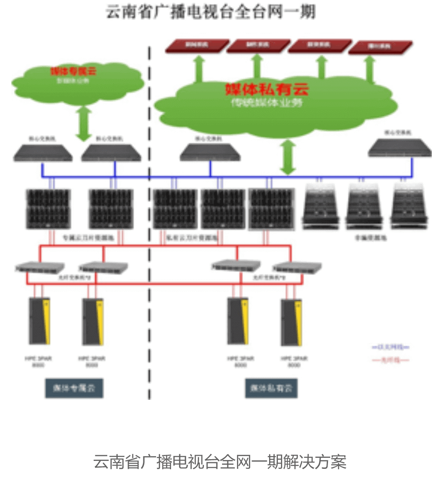

新华三推动云南广电开启“云端盛宴”
在互联网+时代，新闻、娱乐、财经等各类资讯更加广泛、快速的传播，而传统媒体还面临着异军突起的新媒体的挑战。云南电视台在不进则退的压力下，甄选新华三为其打造全新的制作平台来应对骤增的业务量以及来自受众对日益创新的要求，不仅在激烈的市场竞争中逆流而上，更取得领先地位。
传统媒体的变革渴求
云南广播电视台是省内最具影响力的主流媒体，为了实践国家推行的传统媒体和新兴媒体融合发展，把主流媒体内容权威优势和新兴媒体传播平台优势结合起来的战略，提出“媒体云平台”方案，有效解决电视台在资源浪费、业务板块的扩展受限、无法共享等问题，以及满足对基于互联网、移动互联网环境下节目的实时制作日益迫切的需求。
云计算助云南广电全台网建设
新华三经过深入了解客户需求，决定将采用多种云的模式，兼顾公有云高效、灵活的资源优势，及私有云的安全性、管理运维以及融合生产要求，为云南电视台分期建设了台内私有云平台、全媒体新闻生产平台、融合媒体专属云平台、电视播出平台和电台生产云平台等。
一期将涉及非新闻节目生产PaaS平台集成、云非编存储系统、云非编网络安全系统、云非编计算资源等方面内容。后采用HPE ProLiant BL460c刀片服务器、HPE ProLiant Moonshot及HPE 3PAR StoreServ 8000存储、光纤交换机在内的融合生产平台解决方案，在优化、创新广播电视融合媒体“采、编、播、存、用”等业务基础上，构建智能开放、弹性高效的广播电视融合媒体制播平台和智能异构、安全绿色的全流程网络化制播全台网。
为了保证良好的兼容性与扩展性，计算资源池采用虚拟化方案设计，为业务应用的计算资源提供平台，虚拟化资源层能够对计算资源进行池化，抽象成可管理、可调度的逻辑资源。虚拟化计算资源池由HPE ProLiant BL460c Gen9服务器搭建，其中，30台分布于私有云平台的两个刀片服务器机箱中，用于为云南广播电视台核心内容生产业务提供运算能力；另外38台部署与专属云计算资源池的三个刀片服务器机箱中，为云南广播电视台互联网业务和办公业务提供计算能力。
全面满足客户的业务及发展需求
媒体云平台将云南广播电视台的各业务单元内容贯通起来。通过新华三整体解决方案部署的私有云生产平台，能够很好地完成包括总编室、广告、制作、包装、内容管理、播前整备等非新闻业务，其结合分布式存储、云计算、虚拟化、编辑软件工具化等新技术，对资源做全面整合，更好的为广电传统业务模块服务。而在私有云业务网前面，搭建起的面向融合媒体服务的专属云平台，承担了原有新闻通联、线索管理等业务，并能够为整个网络系统更好的满足新的业务需求服务。
新华三整体方案提高了媒体云平台的整体性能和安全稳定性，实现电视台信息化和业务发展的双丰收，满足了广电全媒体制播“灵活、简约、安全、敏捷”等基本需求。
通过业务流程深层次梳理，云南电视台与新华三不但在硬件层面上，更在解决方案层次上有了更紧密的合作，为后续云平台建设奠定基础。云南广播电视台信息技术负责人表示：“新华三技术团队通过前期的细致调研，对系统平台做了详细的评估和规划，为云南广播电视台推荐一套完整的IT方案，架构简洁，易于管理和使用，而且整体架构稳定可靠，完全切合我们的诉求。“